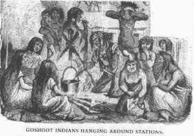

|  |
It is interesting that Twain names Cooper in this text. Indeed, we can see the beginnings of the literary criticism grumblings which erupt in the 1895 "Fenimore Cooper's Literary Offenses when he states:
"The disgust which the Goshoots gave me, a disciple of Cooper and a worshipper of the Red Man--even the scholarly savages in "Last of the Mohicans" who are fittingly associated with the backwoodsman who divide each sentence into two equal parts: one part critically grammatical, refined, and choice of language, and the other part just such an attempt to talk like a hunter or mountaineer, as a Broadway clerk might make after eating an edition of Emerson Bennett's works and studying frontier life at the Bowery Theatre a couple of weeks--I say that the nausea which the Goshoots gave me, an Indian worshipper, set me to examining authorities, to see if perchance I had been overestimating the Red Man while viewing him through the mellow moonshine of romance." (129)
Twain indeed sets to "examining authorities" for the rest of his literary career, but what he exactly discerns, we will never know.

 Read Niagara, a disturbing anecdotal piece featuring Twain's novice narrator who meets the Indians he has read about, but with very different results. This echoes similar sentiments as Noble Red Man and Huck and Tom Among the Indians.
Read Niagara, a disturbing anecdotal piece featuring Twain's novice narrator who meets the Indians he has read about, but with very different results. This echoes similar sentiments as Noble Red Man and Huck and Tom Among the Indians.
Return to Twain's Indians